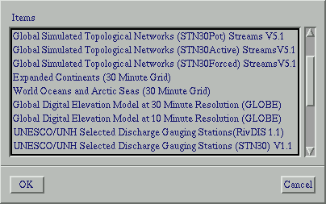
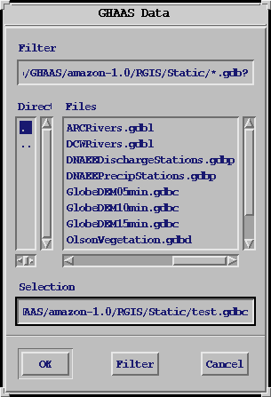
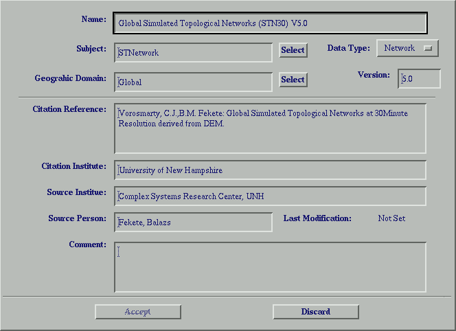
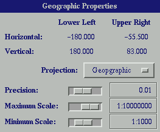
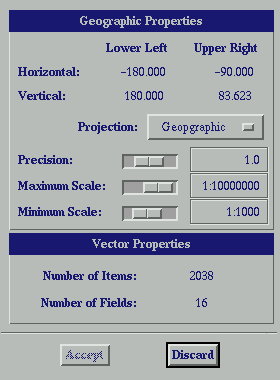

|
The most important feature of the RiverGIS menu system is that it is dynamic. The available menu options and their sensitivity, change depending on various conditions. The visibility of menu options is normally determined by the type of the current data object, while sensitivity of a particular menu option generally depends on the state of the current data object. Data type independent menu items are generally listed at the beginning of the menus, and the data type dependent ones are listed after.
The main menu options are, File, Edit, Analyse, Tools, MetaDB, Display and Help
The Open data option loads a data object from the meta database list. The Open data menu option starts a selection dialog window with the data object names from the user's meta database. When the user makes a selection, it loads this data object into memory and adds the data object to the active data list as the current data object on the control panel window.
|  |
The Open file option starts a regular Motif file selection dialog window and lists the files with .gdb? extensions. The ? is an optional letter, that can be used to distinguish the data type from the file name. However RiverGIS does not depend on the file name extension, it is probably a good practice to use different extensions for different data types. For instance, I normally use the following extensions:
| .gdbp | - point coverage |
| .gdbl | - line coverage |
| .gdbp | - polygon coverage |
| .gdbc | - continuous grid |
| .gdbd | - discrete grid |
| .gdbn | - STNetwork |
| .gdbt | - tabular data |
Reload allows the user to delete all edits that have not been saved.
The Close menu option closes the file that is currently highlighted in the Active Data file list. After closing a file, the file is removed form the Active Data list, and this data layer will no longer be displayed in the rgis display window. The open file or open data menu option must be used in order to work with a file that has been closed, because it is no longer part of the current rgis session.
The Save as menu option allows the highlighted selection in the Active Data list to be saved under a new name or location. Invoking this option brings up a file selection dialog in which a filter can be specified and a new name can be selected with the mouse or entered from the keyboard.
|  |
The Header info menu option opens a Header Info Dialog in which you can enter or edit header information.Only the Name field is mandatory, but it is strongly recommended that the Subject and Geographic Domain fields are filled out as well. These fields can be utilized by RiverGIS's Meta Database capabilities. The Select buttons next to the Subject and Geographic Domain text input fields allow loading predefined names from the user's Meta Database. The data type can be changed only when RiverGIS creates a new data object. Other fields are for data documentation purposes. RiverGIS and further GHAAS components (yet to be developed) probably won't use them, but it may prove to be useful if the documentation fields are filled out properly for archived data objects.
|  |
When naming a new data file, be sure to use different names as using the same name will result in the earlier file being overwritten. When accessing data through the meta database the most recently saved version of a file will be loaded.
Geographical data objects are made up of common, class and sub-class specific properties, which can be viewed and edited with the Properties dialog window. Some of the properties are characteristic of the data object and can not be changed such as map extent, others can be changed like precision, which will impact the computation of the data object. The upper part of the Properties dialog window shows the Geographic extent (Lower Left, Upper Right, Horizontal, Vertical) of the data set. It also displays the precision, the minimum and the maximum scale.
The extent properties can not be modified directly. It is determined by the overall extent of the item objects within the data set.
Precision - the radius at which coordinates are considered to be the same, used in data conversions. The precision resource is used in computation as a tolerance in determining whether two coordinates are equal. When the absolute value of the difference between two coordinate values is less than the precision, RiverGIS assumes they are equal. For grid and network data objects RiverGIS defaults the precision to some fraction of the cell size, which normally does not need to be changed. Vector data are more problematic, since the extent of the smallest distance between objects does not necessarily have any relevance to the precision of the data, therefore it is strongly advised to check and set the precision field for vector data.
The maximum and minimum scale properties are not used in this version of RiverGIS. These are for later version, where these properties will help to specify ranges of scale over which the given data object can be used.
Projection -
|  |
The the lower part of the Properties dialog window contains data class specific properties. Generally the data class specific properties are characteristics of the internal data structure and can not be modified from the Properties dialog window. Only continuous grid data objects have user adjustable property.
Vector Data Object PropertiesVector data objects may contain different items (for instance, line data objects have node and line items), but every data set, has primary items (for instance, the primary items in a line data set are the lines). The Number of Items field in the Properties Dialog window shows the number of primary items.
|  |
RiverGIS organizes any data object by a varying number of tables (which are partly visible to the user), and data arrays, which are always hidden. Items have a single record entry in the corresponding item table, and a different number of attribute fields. Some of the attribute fields are mandatory (for instance the to-node and from-node fields of line records) while others are optional. The number of fields displayed in the dialog window show the total number of fields, including the hidden ones which are exclusively used by the system.
Continuous Grid PropertiesColor code (i.e. shade set) is the only property of continuous grids that the user can modify. Note:These color schemes change dynamically when an area of the display window is zoomed in or out.
|
There are five coloring schemes (Standard, Gray Scale, Blue Scale, Blue to Red and Elevation). Each color shade set has a specific number of color shades. RiverGIS uses these shades to color continuous grids by bining the grid values intoas many classes as the color shade set has. The colors and the number of colors in shade sets are currently hard coded, but can vary from shade to shade.
The Standard shade has very distinct colors with no color gradient. This is the least esthetic color set, but might be useful, when distinct representation of the bined value groups is needed.
The Gray and Blue scale shade sets are simple shade sets with one color gradient (from black to white, and dark blue to light blue respectively). When a continuous grid is displayed with a simple shade set, the grid values from minimum to maximum will be spanned over the color range and bined into as many groups as there are colors in the shade set.
The Blue to Red and Elevation shade sets are dual color gradient shade sets, which are used to color shade negative and positive values within grids separately. The Blue to Red shade set will color negative values as shades of blues (from dark blue to white) and positive values as shades of red (from white to dark red), where values around zero will be shaded as white. The Elevation shade set has a gradient of blue shades from dark blue to light blue for negative values, and topographical colors from dark green through light green and from light yellow to dark brown.
Discrete Grid PropertiesDiscrete grid has no data type specific properties.
Networks have no user modifiable properties. The number of basins and the number of cells are set when RiverGIS builds network topology. Make sure, the precision field is set to be smaller than half of the cell size, if you plan to convert the STNetwork into stream lines ( Analyze->Stream Lines)
Relates two datasets through the DBItems tables. Useful for display of time series data. Relate point coverage of station locations (discharge, climate, nutrient) to table of time series data. Give relate a name and specify the relate field and the join field. Relates are saved in the DBRelations table of the point coverage (necessary to save point coverage to save relate)
Linkage of data sets for analysis and processing purposes. Select Dataset for analysis, File->Link, select dataset to be linked to the active (original) dataset. This is a one way link.
Unlink datasets.
The Exit menu option terminates the RiverGIS session. Any changes made to the data layers, that were not saved will be lost. At the closure of the session the user's meta database file is updated to include any new data objects that were opened during the current session.
The Edit menu options will vary by data type. Fields submenu offers function to manipulate table structures of any data, and as such is data type independent, however it requires some data loaded.
Copies attribute to record name
Join tables together (ie: join the DBItems table to the symbol table)
When using with unlinked dataset: allows join of any table to the DBItems table
When using with linked dataset: join any of the tables from linked dataset to the DBItems table of the active dataset (Relate field - field in active dataset DBItems table, Join field - field to be linked to DBItems table) Unspecified field - RGIS defaults to linear join of field with same data type. If Integer field blank - Record_Id is assumed. If Character field blank - Record Name assumed. Does not allow for join of float attributes.
Date is stored in the yyyy-mm-dd hr:mi format. This is necessary for the time series function
AddAllows the addition of field to a table structure. The menu option opens a dialog window in which, the user can specify the
RedefineRedefine menu options provides the mean to restructure existing tables. It will open a dialog window, with subwindows for each field in the selected table showing the field properties (such as name, type, data size, output width decimals, missing value). Available properties will vary by the field type.
DeleteWorks with point data sets and network cells select items in table and then delete the selected items using delete selection.
set symbol color 1 time parsing of data set point, line, polygon, network, discrete grid)
(point, line, polygon, network, discrete grid, table)
adds point location xy coordinates to the DBItems table
Prompts for field name (area field) and conducts 3x3 search for best match for station, places station in center of grid cell. If field name is left empty it moves point to the center of grid cell without neighbourhood search.
(grid linked to line) -
(point, polygon, continuous grid, discrete grid) - Simplifies the process of entering the date attribute of time series data. Specify start year (rgis assumes that year starts with Jan). If dataset is climatology - give a fictious year.
(continuous grid, discrete grid) - Brings up a dialog box where the new name of the current data layer can be entered.
(continuous grid, discrete grid) - Recalculates the basic grid statistics for each layer
(network linked to grid) - Makes Elevation Coverage Consistent with an editted network (fill function)
(network linked to grid) - Not Current -- Elevation smoother
creates or updates the attribute table for the network
trims network to the actual extent
Adds cell xy coordinates to the DBCell table.
Adds basin mouth xy coordinates to the DBItems table
Adds (Shreeve) )magnitude field to DBCells table.
Adds distance to mouth (higher order stream) field to DBCells table.
Adds distance to basin outlet field to DBCells table.
Adjust location of the network based on linked data set
All of the Analyze menu options are listed below. Please note that the menu options that are available will depend on the type of object currently selected in the active layer list. Note: All statistics are computed as cell area weighted statistics.
plots fields from tables, unselected points are displayed in red, selected points are displayed in green
Set Value - set field values from another field or as a single value (this will write the record ID or Record Name into numeric or character string field if the value field is left empty).
Compare - useful for calculating error between reported and estimated catchment area, several error calculation methods are available.
(2nd field can be an integer - allows scaling of data)
Calculates accumulation between stations ( ie: accumulation of discharge) Accumulate assumes mm/timestep and accumulates with a conversion to cubic km. Every layer is accumulated, thus the number of output layers equals the number of input layers. Negative numbers are accumulated. Accumulate includes the data in the cell which is being reported.
Calculates interstation values - disaggregation (ie: interstation discharge)
calculates basin attributes for point coverage based on network
Matches stations to network (combined functions of STN Coordinates/STN Characteristics) - not maintained
Creates sub basin grid for each point along the network. (Make sure to run STN Characteristics first so that topology is clean)
Calculates the mass center coordinates of the subbasin and adds to attribute table of point coverage
Not Current
Samples grid at the point locations. single layer - samples the default layer. The result of sampling continuous grid is stored in the DBItems table of the point coverage using the layername as fieldname. If the field exists it contents will be overwritten otherwise the function will create a new float table field. When discrete grid is sampled, the function will create a string table field named as the current layer and store the record name of the category from the DBItems table of the discrete grid. Furthermore it will copy all the attribute fields from the discrete grid.
multiple layers - samples all layers and creates new table with values for each layer
Creates new table for each layer of subbasin statistics
(Calculates the distribution of categories for each layer
using editted network and elevation grid, pits and pour points are identified, calculations are done for pour points of volume, area etc.
Creates network based on flow direction between grid cells, uses all layers (mean, max, min to incorporate scaled data)
Merges contiguous grids (different domains) to create one large domain (May be able to handle multiple resolutions - see Balazs for more info)
(continuous grid) - Eliminates negatives
(continuous grid) - Sets negative values to either zero or nodata.
Add, Substract, Multiply, Divide
If the grids have different numbers of layers the linked grid will wrap to allow for calculations on all of the layers of the active grid (ie: if the active grid has 36 layers, and the linked grid has 12 layers the linked grid layers will be used 3 times each in the operation with the active grid) Layers can be idled and will be skipped when operations are calculated.
(continuous grid) - Converts continuous grids to discrete by bin according to the provided breakpoints.
(continuous grid) - Calculates grid cell statistics (average, minimum, maximum, standard deviation across all layers.
(discrete grid) - Not Current
(discrete grid) - All integer and string fields
(discrete grid) - All numeric fields
(discrete grid linked to discrete grid)
(discrete grid linked to continuous grid)
Converts any of the network cell attributes from DBCell table to a grid.
equals Accumulation/Catchment Area upstream
(network linked to grid) - Samples the slope of a grid using the network gradient (Create a distribution of slopes for a grid using Cell Slopes followed by Cell Sampling.)
Uses main stem for basin - calculates upstream search, sampling grid at each cell of mainstem. Table of values is created.
Samples grid at the mouth cell of the basins. single layer - samples the default layer. The result of sampling continuous grid is stored in the DBItems table of the network coverage using the layername as fieldname. If the field exists it contents will be overwritten otherwise the function will create a new float table field. When discrete grid is sampled, the function will create a string table field named as the current layer and store the record name of the category from the DBItems table of the discrete grid. Furthermore it will copy all the attribute fields from the discrete grid.
multiple layers - samples all layers and creates new table with values for each layer
cell - samples at cell
Basin statistics (min, max, mean, SD); Headwater (cells without input) statistics (min, max, mean); Histogram (frequency curve of grid values)
(network) - converts network to vector coverage based on RiverGIS stream order. Caution: It is important to set the precision appropriately for this conversion.
The import menu option allows data to be brought into RiverGIS from a number of supported formats. (Always save after import)
Arc/Info (Vector)
Grid Matrix
Grid Matrix flexibly imports a wide variety of raster data data whose format does not conform to the other import methods. This function will allow the import of multiple data layers at once. When run a window pops up allowing the user to select a number of options describing the data set to be imported.
Dimensions: The number of grid cells in a column and row
Grid Layout This lets RGIS know how the matrix was saved into the file. Options are 'by Row' and 'by Column'. Layout by row tends to be more common.
Row Order This tells RGIS if the raster data is saved with north as the top row (Top-Down) or saved with north as the bottom row (Bottom-Up)?
File Type ASCII or Binary files can be imported. As a general rule, if you can read the file with a simple text editor then the file is ASCII if not then the file is likely Binary
Binary Type If 'Binary' is selected as the File Type then the type of binary file must be selected here. The naming corresponds to the sizeof() operator in the C programming language and represents the number of bytes for a single grid cell. On most systems:
Byte Order Different machines represent floating point numbers in different ways. The two most common ways are known as 'Big-Endian' and 'Little-Endian'. These are the types of floating point representations for a variety of machines. Currently RGIS only reads IEEE floating point values.
LL Cell: Column and row of the lower left cell cell in the raster matrix. Often this will be 0 for the column and the total number of rows - 1 for the row since indexing starts counting at 0 (remember, RGIS is written in C++). By selecting a different grid cell for the lower left corner, the user can effectively shift the matrix as if on a horizontal and vertical cylinder.
Cell Size This is the size of a single grid cell in units the same as the LL Corner: option. For a raster file with 30 minute grid cells the values would be 0.5 for both the Width and Height.
LL Corner: The coordinates of the lower left corner of the matrix (as given by the LL Cell: option) in the same units as the Cell Size option. For a global data set, Horizontal is likely -180.0 and Vertical is likely -90.0.
File Name This is the filename of a single raster file to be imported or, if the List File toggle is selected, an ASCII file specifying multiple filenames for the input of more than 1 raster file. See the List File toggle below for more information on this option.
Header This tells RGIS if there is a header to be stripped from the file before reading the data. If the File Type is ASCII then this option represents the number of lines to strip off the top of the file. If the File Type is Binary then this option repesents the number bytes to strip. A value of 0 indicates no header.
Record Padding (Balazs is this before the record or after??)
List FileWhen this option is selected the File Name is an ASCII file containing a list of filenames representing the raster files to be imported. The ASCII file should contain 1 filename per line and no other information. All files imported will be used to form a single multi-layer RGIS data set.
DM (Grid)Best to export to an empty directory
ASCII tableRGIS will attempt to truncate the file name to 11 characters, uses grid layer names to name Arc/Grids. Export of networks will result in two vector coverages and a number of grids that correspond with the network attributes. Export should be directed to an empty directory with the naming convention w_*.
Creates duplicate dataset with RGIS - will prompt for new name - avoid using the same name (duplicate names will be overwritten by the Meta DataBase.
If XY coordinate fields exist in the DBItems table this function can be used to convert any dataset to a point coverage
(network) - Creates point coverage of basin mouths (pour points)
The 2DView menu option opens a graphical display window. All open data layers that have the display option enabled will be drawn in this window.
The Redraw All menu option causes the 2DView window to be redrawn. Coosing this option has the same effect as clicking on the Redraw button located in the upper left corner of the 2DView window.
The Attributes Close menu option can be used to close the Attribute window that is currently open. If the attributes menu is not open, this menu option has not effect.
The Open Table menu option brings up a list of the available tables. Choosing a table from this list displays the table on the screen along with a number of tools that can be used to work with the table data.